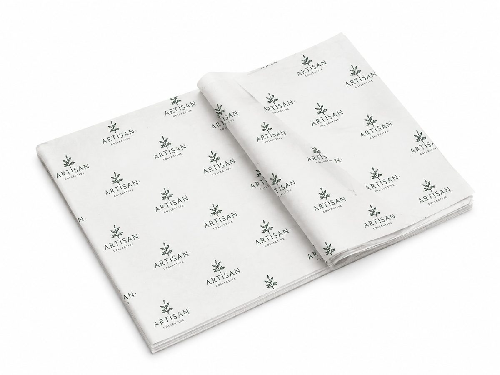

Custom printed tissue paper for luxury unboxing, apparel, cosmetics and gift packaging.
BestPackFactory supplies this product for B2B brands, importers, distributors, ecommerce sellers and enterprise packaging buyers. We support custom size, material, artwork, surface finish, barcode, QR code, inserts and global delivery.
| Business Model | B2B RFQ only, no retail checkout |
| MOQ | 500 PCS |
| Customization | Size, material, logo, color, finish, insert, barcode, QR code |
| Best For | Brands, wholesalers, distributors, ecommerce sellers and private label buyers |
| Contact | Sales Manager: Lisa Wu Email: lisa@colorprintingpackage.com WhatsApp +86 158 8653 0985 |
What tissue paper weights do you offer?
17 gsm (standard, semi-transparent), 22 gsm (mid-weight, common for fashion retail) and 28 gsm (heavier, more opaque hand-feel for premium unboxing). Compare samples of two weights with your own product before ordering.
How many colours can be printed on tissue paper?
Most orders use one to three spot colours in a repeating logo pattern. The number of colours and the print method are confirmed after we review the artwork; fine lines and small text are checked on a physical sample.
Will the print rub off onto clothing or products?
Tissue is thin and porous, so heavy ink coverage and dark inks can rub onto pale fabrics under pressure or humidity. Approve a physical sample with the actual product before production. Printed tissue is not supplied for direct contact with unwrapped or greasy food unless a food-contact test report for the selected paper and ink is agreed in writing.
Printed tissue is a wrapping layer for garments, shoes, cosmetics and gift sets. It is thin and porous: heavy ink coverage can show through, and dark ink on light stock may rub onto pale fabrics under pressure or humidity. Approve a physical sample with your own product before production.
It is not supplied for direct contact with unwrapped or greasy food. If a food-contact use is required, ask for a test report covering the exact paper and ink before ordering.
Recycled-content or FSC-certified paper can be requested for eligible orders. The certificate holder and the exact claim are confirmed in writing before material is ordered; see the certificate register for the current status of each document.
The table below is written for industrial RFQ comparison. Final specification is confirmed on the approved physical sample and the written order sheet.
| Paper | Tissue paper, 17 / 22 / 28 gsm |
|---|---|
| Base colour | White, kraft or coloured tissue stock |
| Sheet size | Cut to your finished sheet size; confirmed on the quotation |
| Printing | Repeating logo pattern in spot colours; number of colours and print method confirmed per artwork |
| Artwork file | AI / PDF accepted; vector logo, repeat spacing and orientation |
| Colour check | Spot colours approved on a physical printed sample; thin, porous tissue shows colour differently from coated paper |
| Dimension tolerance | ±1 mm on finished sheet size |
| Packing | Flat or folded sheets, counted into packs, export cartons with moisture protection |
| Starting quantity | Typically from 500 sheets per size and design; confirmed by sheet size, colours and ink coverage |
| Quality inspection | AQL 2.5 for major defects; random inspection before shipment |
| Use case | Garment, shoe, cosmetic and gift wrapping; e-commerce unboxing |
| RFQ data required | Sheet size, paper weight, base colour, print colours, artwork, quantity, fold/pack method, destination |
| Sampling time | Dieline and artwork proof within 24 hours; physical samples in 5–7 working days after artwork confirmation |
| Bulk production | 20–30 days after final sample approval; exact schedule confirmed on the order sheet |
| Payment terms | 30% T/T deposit before production, 70% balance before shipment; L/C, PayPal and Escrow also accepted |
| Incoterms | FOB Shenzhen, CIF, EXW and DDP; freight depends on destination, quantity and packing |
Click below to contact us quickly by WhatsApp or email. We can help with dieline, samples, printing, materials and worldwide shipping.
💬 Chat on WhatsApp ✉ Email Inquiry lisa@colorprintingpackage.comBefore you send an RFQ, work through these seven sourcing decisions so your quote, MOQ and lead time are realistic.